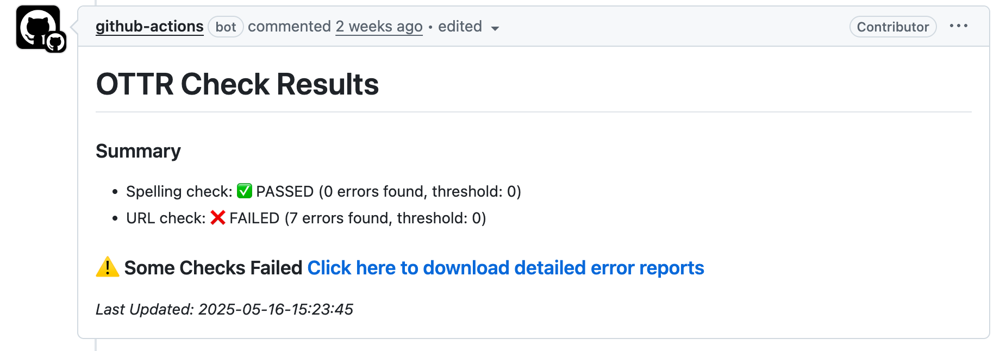
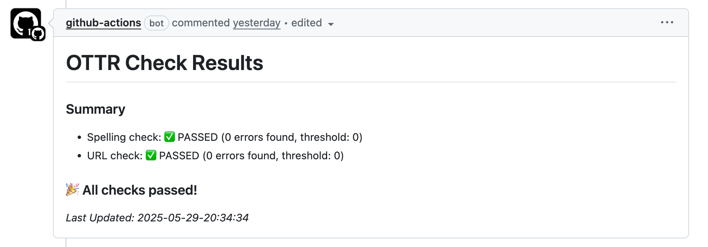

Customizing Automatic Checks
By default, all automation steps and checks will run. Based on the requirements of your course, you have the flexibility to enable or disable specific features by modifying the settings in the config_automation.yml file. Simply adjust the options to “true” or “false” accordingly.
Most options are controlled with true or false. The website renderer is the main exception: render-website should be set to one of rmd, rmd_web, quarto, or quarto_web.
The config_automation.yml file looks like this:
### Render preview of content with changes (qmds, Rmds, and mds are checked)
render-preview: true
##### Checks run at pull request #####
# Check quiz formatting
check-quizzes: false
quiz_error_min: 0
# Check that urls in the content are not broken
url-checker: true
url_error_min: 0
# Spell check qmds/Rmds and quizzes
spell-check: true
spell_error_min: 0
#### Other options
# Style any R code
style-code: true
# Would you like your markdown files to be checked for formatting
markdown-linter: true
# Would you like a readability report on your markdowns?
readability-report: true
# Test build the docker image if any docker-relevant files have been changed
docker-test: false
# Should URLs be tested periodically?
url-check-periodically: true
##### Renderings run upon merge to main branch #####
# Rendering each platform's content
render-website: rmd
render-leanpub: true
render-coursera: true
## Automate the creation of Book.txt file? yes/no
## This is only relevant if render-leanpub is yes, otherwise it will be ignored
make-book-txt: true
# What docker image should be used for rendering?
# The default is jhudsl/base_ottr:main
rendering-docker-image: 'jhudsl/base_ottr:main'Pull Request Checks
These actions are triggered when a pull request is opened or updated. They are set up in .github/workflows/pull-request.yml.
Use pull request checks to catch issues before they are merged into main.
Check Quiz Formatting
In config_automation.yml, quiz checks are controlled by:
check-quizzes: falseBy default, this is set to false.
Set check-quizzes: true if you plan to create quizzes on Leanpub. This is not necessary if you only want quizzes for Coursera.
Leanpub requires a particular quiz format for uploads. This action checks quizzes in the quizzes directory and prints the results in a GitHub comment on your pull request.
Check for broken URLs
There are two different URL checkers in config_automation.yml.
| URL checker | Config option | When it runs |
|---|---|---|
| Pull request URL checker | url-checker: true |
When a pull request is opened or updated |
| Periodic URL checker | url-check-periodically: true |
On a set interval |
The pull request URL checker is set by:
url-checker: trueGitHub Actions checks all URLs when you create a pull request to the main branch.
If the check fails, click the pull request comment that says “Click here to download detailed error reports”. This downloads a zip file with the broken URLs it found.
If you do not set the additional error threshold option, the check summary may still report that the URL check failed, even when 0 errors were found.
url_error_min: 0The periodic URL checker runs on a set interval to see whether any referenced URLs are no longer valid. It is set by:
url-check-periodically: trueIf either URL checker fails on something that is not really a URL or does not need to be checked, add the exact URL from the error output to resources/ignore-urls.txt.
After committing the change to resources/ignore-urls.txt on your branch, the URL check should pass.
Preview rendering
In config_automation.yml, preview rendering is controlled by:
render-preview: trueAfter you open a pull request, an automatic comment will link to a preview render. Each new commit re-renders the preview and updates the comment with the latest version.

These GitHub Actions are located in the render-preview section of pull-request.yml.
Preview renders do not incorporate changes caused by Docker image updates if the Dockerfile is also changed in the same pull request.
Spell checking
In config_automation.yml, spell checking is controlled by:
spell-check: trueGitHub Actions will automatically run a spell check on all .qmd, .Rmd, and .md files whenever a pull request to the main branch is filed.
The error threshold option controls how many errors are allowed before the check will fail.
spell_error_min: 0You will need to resolve spelling errors before merging your pull request. Errors are displayed much like PR URL check errors, with a summary of how many errors were found.
To review spelling errors, click the pull request comment that says “Click here to download detailed error reports”. This downloads a zip file with the spelling errors it found.
Some of these errors may be things that the spell check doesn’t recognize for example: ITCR or DaSL. If it’s a ‘word’ the spell check should recognize, you’ll need to add this to the dictionary.
If the spell checker flags a word that should be allowed, add it to resources/dictionary.txt in alphabetical order.
After committing the change to resources/dictionary.txt on your branch, the spell check should pass.
The PR comment included below shows an example of a check that passed (spell check), and a check that failed (the URL check) with the option to download detailed error report(s).
When all checks pass, the option to download error reports is no longer included, instead displaying a message that the URL and spell checks passed.

Style code
In config_automation.yml, R code styling is controlled by:
style-code: trueThe styler package will style R code in all .qmd and .Rmd files. Style changes are automatically committed back to your branch.
Docker testing
In config_automation.yml, Docker testing is controlled by:
docker-test: falseBy default, this is set to false, which means Docker testing will not run automatically unless you change it to true.
This is only relevant if you have your own Docker image you are managing for your course. If changes are made to Docker-relevant files, this check will test rebuild the Docker image.
Docker-relevant files include:
Dockerfileinstall_github.Rgithub_package_list.tsv
If the image builds successfully, then it makes sense to merge the pull request to main. However, the Docker image will not be pushed to Docker Hub automatically. Follow these instructions to push your Docker image to Docker Hub.
Rendering actions
Upon merging changes to any .qmd, .Rmd, or assets/ folder to main, the course material will be automatically re-rendered.
By default, all rendering steps run. Depending on the needs of your course, you can turn renderers on or off in config_automation.yml.
render-leanpub: true
render-coursera: trueFor publishing to Leanpub, make sure that the Leanpub renderer is enabled:
render-leanpub: trueSee more details about publishing to Leanpub here.
If render-leanpub is true, the make-book-txt option is also relevant. This option controls whether you manually specify the order of chapters and quizzes with a Book.txt file, or whether the file is automatically generated based on file and quiz numbering. Read more about this in the upcoming section.
By default, make-book-txt: true uses the numbering in chapter and quiz filenames to set the order.
If you want a different chapter or quiz order in Leanpub, set make-book-txt: false so the manually created Book.txt file is not overwritten.
make-book-txt: trueFor publishing to Coursera, make sure that the Coursera renderer is enabled:
render-coursera: trueSee more details about publishing to Coursera here.
Manually running rendering or checks
From time to time, it may be useful to manually re-trigger a particular GitHub Action. Most of the GitHub Actions, particularly the rendering ones, can be re-run manually. See this article about how to manually re-run a GitHub Action.
Fixing broken GitHub Actions
GitHub action rendering or other GitHub actions may fail sometimes if the input is unexpected or for a number of other reasons. To investigate why a GitHub action has failed, go to Actions and click on the failed action. See this article for how to find this information.
Start with the failed action’s logs, then check the FAQ’s section for common errors and fixes.
If you are unsure what the error message means and have trouble addressing it, please file an issue on the OTTR_Template repository to get help.